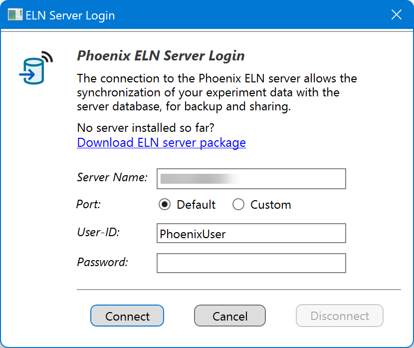

ELN Server
Introduction
An electronic lab notebook (ELN) can do more than just capture your own experiments. When you optionally choose to synchronize your work with an in-house ELN server, its value expands significantly:
- Reaction Database: By sharing experimental data via an in-house ELN server, your organization builds a continuously growing collective repository of reactions that you can explore using substructure searches. This ensures you stay aware of relevant discoveries made by colleagues and avoid unknowingly repeating unsuccessful experiments.
- Automatic Backup: Every auto-save of your protocol is instantly mirrored to the Phoenix ELN server. If your device fails or an unexpected incident occurs, you can restore your local ELN to the most recently synchronized state at any time (see below).
- Novelty check: Unintentionally repeating known work is both time‑consuming and inefficient. The Same Step side panel in Phoenix ELN is already a powerful tool for seamlessly detecting identical reactions within your own local experiments. When connected to the ELN server, however, its reach expands significantly by incorporating the known work of other users also. In this setting, once you enter a reaction sketch, the Same Step panel automatically updates and merges matching experiments from other users with your own, sorted by yield or scale.
There’s no imminent requirement for a fully fledged corporate server to host a Phoenix ELN server database. For small teams, or even individual users who want automated data backups, an inexpensive network-attached storage (NAS) device is entirely sufficient. The Phoenix ELN server package (GitHub) provides detailed, step-by-step instructions for setting up the ELN database. The server connection is designed to automatically update the server database structure to match the latest client-side database structure, so no administrative intervention is needed after client upgrades.
Connecting to the ELN Server
Once the ELN server database is in place, first make sure that you are currently working with experiments created under your own user-ID. It is not possible to synchronize demo experiments with the server. Then choose Tools > Database Connection in the main toolbar to connect to the server:

Enter the following connection data:
- Server Path: This is either the unique name of your server containing the Espresso ELN database (as e.g. appearing in the network section of file explorer), or its network address.
- Port: The server port normally should be left at the 'Default' option (this is port 3306). In special cases, e.g. when running two database versions in parallel, you may assign another port number by selecting the 'Custom' option.
- User-ID / Password: The required user-ID and password are the same for all Phoenix ELN users in your organization, where the user-ID always is 'PhoenixUser'. The database password, however, needs to be specified and communicated to you by your database administrator. You need to enter these login data just once, they are remembered when launching the application the next time. It is important to note that all server users enter exactly the same login data, including the server password (this is not to be confused with the personal ELN user name and password).
These login data are remembered, you don't need to re-enter them again.
After clicking Connect, the complete content of your local experiment database is uploaded to the server to initialize the synchronization. This may take a while, depending on data volume and connection bandwidth. All subsequent synchronizations will only transfer the changes since the last synchronization. Since this is occurring in the background, you will be able to continue to work normally, even while a lengthy synchronization is ongoing.
Restore from Server
If your computer fails, or in case of server synchronization issues, you can restore your local ELN to the most recently synchronized state by choosing Tools > Restore from Server in the main toolbar. When your original ELN installation still is available, however, it is recommended to utilize the ELN transfer package method to migrate your data, which also transfers Phoenix ELN application settings.
Accessing Server Experiments
Once connected to the ELN server, finalized experiments of other users are accessible from Phoenix ELN functionalities like Synthetic Connections or Reaction Searches. Please note that only finalized experiments are accessible by others. Once opened in the ELN, the experiment of another user can be cloned by using Create Experiment for repeating or modifying the copy under your own username.
Disconnect from Server
The Disconnect button allows to temporarily disconnect from the ELN server, e.g. before scheduled server maintenance work. All changes since the last server synchronization continue to be captured and will be synchronized to the server when reconnecting later on.